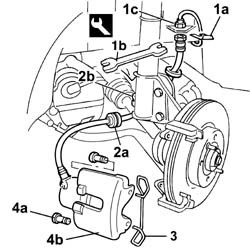
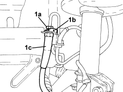
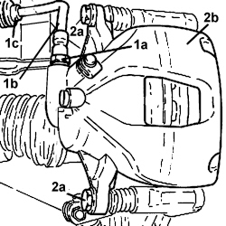

3310A30 FRONT BRAKE CALIPER (one) - R.R.
- Path
- Procedures > 33 BRAKES > 3310 DISC BRAKES > 3310A FRONT DISC BRAKES > 3310A30 FRONT BRAKE CALIPER (one) - R.R.
- Kind
- repair procedure (removal / refitting; the operation number is the code)
- Applies to
- all engines; all production periods
- Interactive page
- https://sloeber94.github.io/elrnDB-fDbl/en/#/2584621
Applies to: engines: 1.2 8v, 1.6 16v, 1.3 JTD 16V, 1.9 JTD 8V, 1.9 DIESEL; all production periods
 Removing
Removing
 Refitting
RefittingPosition the vehicle on the lift.
Remove one front wheel, proceed as follows
Op. 4450B02 LEFT FRONT WHEEL - R.R..
1. Remove clip (1a) and use tool (1b) to unscrew brake pipe fitting (1c).
Description | Code | |
|---|---|---|
1b | Box spanner for brake connector | 1.856.132.000 |
2. Release the brake pipe rubber retainer (2a) from its seat (2b) on the shock absorber.
3. Remove the clip fixing the brake caliper to the bracket.
4. Undo the bolts (4a), then remove the brake caliper assembly (4b).

Applies to: engines: 1.2 8v, 1.6 16v, 1.3 JTD 16V, 1.9 JTD 8V, 1.9 DIESEL; all production periods
Refitting
RemovingFit the front brake caliper on the disc.
Secure the brake caliper by tightening both rear bolts.
Fastening | Component | dia | Value (daNm) | |
|---|---|---|---|---|
- | Bolt | FRONT DISC BRAKE CALIPERS COMPLETE | M10 X 1.25 | 2.5 ÷ 3 |
Fit the calliper spring and engage correctly.
Tighten the hose connector to torque, then secure the pipe to the shock absorber ring and connect the brake pipe clip.
Fastening | Component | dia | Value (daNm) | |
|---|---|---|---|---|
- | Connector | PIPE CONNECTOR TO CALIPER | M10 x 1 | 1.4 |
Op. 0010T64 BRAKE AND/OR CLUTCH FLUID CHECK LEVEL AND TOP UP AS NECESSARY.
Applies to: engines: 1.2 8v, 1.6 16v, 1.3 JTD 16V, 1.9 JTD 8V, 1.9 DIESEL; all production periods; only with equipment: ABS
Op. 0010T66 EXTRAS FOR VERSIONS WITH ABS FOLLOWING OPERATION 0010T65.
Refit the front wheel, proceed as follows
Op. 4450B02 LEFT FRONT WHEEL - R.R..
Remove the vehicle from the lift.
Applies to: engines: 1.4 8v, 1.6 16v, 1.3 JTD 16V, 1.9 JTD 8V; production: da 12/03; only with equipment: MY 2005
Removing
Refitting- Position the vehicle on a lift.
- Unscrew the brake fluid reservoir plug and fit the tool.
Description | Code | Function | |
|---|---|---|---|
- | Plug | 2.000.001.400 | Brake/clutch system vacuum |
Op. 4450B02 LEFT FRONT WHEEL - R.R.
1. Disconnect fitting (1a), remove clip (1b) and disconnect hose (1c).

Applies to: engines: 1.4 8v, 1.6 16v, 1.3 JTD 16V, 1.9 JTD 8V; production: da 12/03; only with equipment: MY 2005
1. Undo the connector (1a) and remove the hose (1b) by releasing from fastening (1c).
2. Undo the bolts (2a) and remove the brake caliper (2b).

Applies to: engines: 1.4 8v, 1.6 16v, 1.3 JTD 16V, 1.9 JTD 8V; production: da 12/03; only with equipment: MY 2005
Refitting
Removing- Fit the brake caliper from its seat and tighten the bolts to the recommended torque.
Value daNm | Fastening | Component | dia | |
|---|---|---|---|---|
- | 2.7 ÷ 3.3 | Bolt | Front brake calipers - bracket side | - |
- Fit the rigid pipe and tighten the bolts to the recommended torque.
Value daNm | Fastening | Component | dia | |
|---|---|---|---|---|
- | 1.4 ÷ 1.8 | Connector | Flexible pipe to front brakes - brake caliper side | M10 |
- Conect the hose, secure with the clips and tighten the fitting to the specified torque.
Value daNm | Fastening | Component | dia | |
|---|---|---|---|---|
- | 1.4 ÷ 1.8 | Connector | Brake pipe connectors | M10 |
Op. 4450B02 LEFT FRONT WHEEL - R.R.
Op. 0010T64 BRAKE AND/OR CLUTCH FLUID CHECK LEVEL AND TOP UP AS NECESSARY
Op. 0010T65 HYDRAULIC BRAKE SYSTEM - BLEED AIR
- Remove the vehicle from the lift.
Topics linked from this page (4)
- 0010T64 brake and or clutch fluid check level and top up as necessary
- 0010T65 hydraulic brake system bleed air
- 0010T66 manual gearbox oil check level and top up if necessary
- 4450B02 left front wheel r r
Topics that link to this page (9)
- F10 EXCESSIVE BRAKE PEDAL FREE PLAY
- F12 BRAKE PEDAL HARD
- H01 VEHICLE DRIFT
- H02 DRIFT WHILST BRAKING
- S30 BRAKES NOISY'
- 3310A14 FRONT DISC BRAKES - R.R.
- 3310A32 FRONT BRAKE CALIPERS - R.R.
- 4450C10 front pillar (one), l/h or r/h complete with wheel hub - r+r with wheel removed - check wheel geometry separately
- 4450C32 one front wheel hub bearing, lh or rh - replace